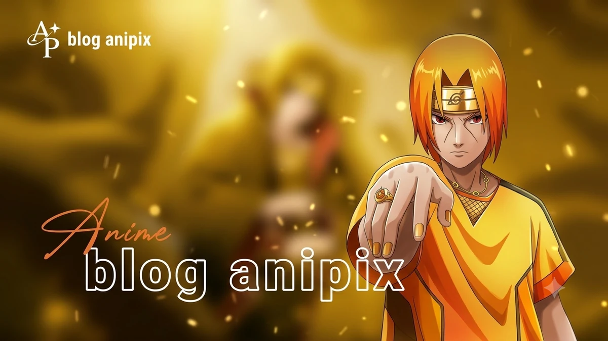
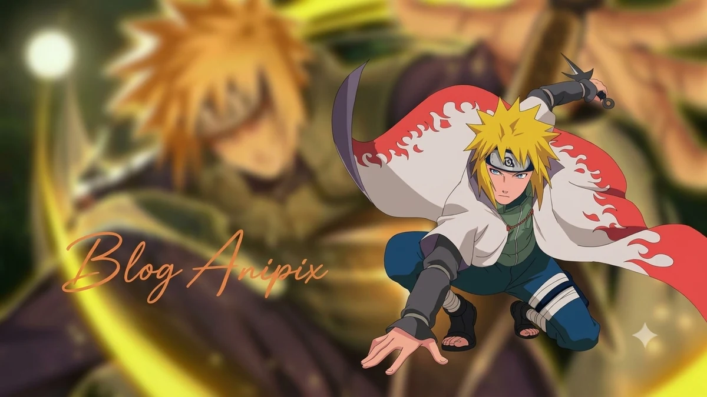

Naruto Shippuden Part 1: Season 1 (Episodes 1-32) - Every Episode Explained

Last updated: 20 October 2026
This is Part 1 of the complete Naruto Shippuden episode-by-episode guide, covering Season 1: Episodes 1 to 32 - the whole of the Kazekage Rescue arc, the story that opened Shippuden in 2007 and immediately proved the sequel was going to be worth it.
Every episode below has a short summary of what happens and a note on how it holds up. If you only want the arc-level overview, read the complete arc guide instead.
Season 1 at a glance
- Episodes: 1-32
- Arc: Kazekage Rescue Mission
- Type: Canon (no filler in this season)
- Aired: 15 February 2007 - 25 October 2007
- Season score: 9/10
Season 1 is the cleanest run in the whole of Shippuden. Thirty-two episodes, no filler, one continuous story, and a proper emotional payoff at the end. If someone asked you to show them why Shippuden was good, this is the season you would put on.

Every episode explained
Episode 1: Homecoming
Naruto comes back to the Hidden Leaf after two and a half years of training with Jiraiya. He is taller, louder, and still in orange. Konoha has changed around him, and Tsunade is now the Hokage.
Note: A confident, warm reopening. It reminds you who everyone is without wasting time.
Episode 2: The Akatsuki Makes Its Move
The Akatsuki begin hunting the tailed beasts in earnest. Deidara and Sasori set out for the Hidden Sand, where the One-Tail is sealed inside the Kazekage.
Note: The threat is established fast. Shippuden does not waste episodes on setup.
Episode 3: The Results of Training
Naruto and Sakura show how far they have come in two and a half years. Sakura's medical training under Tsunade is revealed, and the old Team 7 dynamic is rebuilt around two people who have clearly grown.
Note: Sakura's reintroduction is the best thing in the episode. She is finally written as capable.
Episode 4: The Jinchuriki of the Sand
Gaara, now the Kazekage, is the target. The Akatsuki slip into the Hidden Sand, and the village is caught completely unprepared.
Note: Gaara as Kazekage is a great payoff for Part 1 of the original series.
Episode 5: The Kazekage Stands Tall
Gaara fights Deidara above his own village, using his sand to protect the people below. He is fighting to keep the battle away from them, and it costs him.
Note: The aerial fight is a strong visual change of pace for the series.
Episode 6: Mission Cleared
The Akatsuki escape with Gaara. Suna is left reeling, and the news reaches Konoha. The rescue mission begins to take shape.
Note: Sets the clock running. Everyone now knows how serious this is.
Episode 7: Run, Kankuro
Kankuro, poisoned in the earlier clash, collapses. Suna's medical ninja cannot treat the poison, and the situation becomes a race against time.
Note: Kankuro gets a rare moment of focus.
Episode 8: Team Kakashi, Deployed
Team Kakashi - Naruto, Sakura and Kakashi - is sent to the Hidden Sand. They are joined by Team Guy, and the pursuit of the Akatsuki begins.
Note: Two teams, one mission. The arc opens up properly here.
Episode 9: The Jinchuriki's Tears
Sakura uses her medical knowledge to analyse and counter Sasori's poison, saving Kankuro. Naruto struggles with what is happening to Gaara, who he understands better than anyone.
Note: Sakura's first real victory of the series, and it is earned.
Episode 10: Sealing Jutsu: Nine Phantom Dragons
The Akatsuki begin the extraction ritual, pulling the One-Tail out of Gaara. Naruto and the others race to reach them before it is too late.
Note: The ritual scenes give the Akatsuki a proper sense of scale.
Episode 11: The Medical Ninja's Student
Chiyo, the elderly puppet master of Suna, joins the mission. Her history with Sasori is established, and the personal stakes of the coming fight become clear.
Note: Chiyo is one of the best additions in the arc.
Episode 12: The Retired Granny's Determination
Chiyo commits to the mission despite her age and her connection to Sasori. The teams close in on the Akatsuki hideout.
Note: Quiet, character-driven, and it pays off later.
Episode 13: A Meeting With Destiny
The teams finally reach the Akatsuki's location. The confrontation everyone has been waiting for is set up.
Note: The arc shifts from pursuit to battle.
Episode 14: Naruto's Growth
Naruto's improvement over the timeskip is shown in action. The Akatsuki reveal how far ahead of them he still is.
Note: Good to see the training actually matter.
Episode 15: The Secret Weapon is Called....
The Akatsuki's abilities are laid out as the fight begins in full. Sasori's puppets and Deidara's clay both prove to be genuinely dangerous.
Note: The Akatsuki feel like real opponents again.
Episode 16: The Secret of Jinchuriki
The truth about the tailed beasts and their hosts is explained - including what happens to a jinchuriki when the beast is removed.
Note: Important lore, delivered without a lecture.
Episode 17: The Death of Gaara!
The extraction is completed, and Gaara dies. Naruto's reaction is the emotional centre of the arc.
Note: One of the most effective moments in early Shippuden.
Episode 18: Charge Tactic! Button Hook Entry!!
The rescue teams break into the Akatsuki hideout and the battle splits into separate fights. Team Guy takes one front, Team Kakashi another.
Note: The split lets every character have something to do.
Episode 19: Traps Activate! Team Guy's Enemy
Team Guy fights through traps and opponents to clear a path, while Kakashi and Naruto push towards Deidara.
Note: Team Guy finally get a proper showing.
Episode 20: Hiruko vs. Two Kunoichi!
Sakura and Chiyo face Sasori and his first puppet, Hiruko. It is a fight built on reading your opponent rather than raw power.
Note: Sakura's fight scenes here are the best she has had.
Episode 21: Sasori's Real Face
Sasori is revealed to be inside a puppet body of his own making. The fight turns and the stakes rise.
Note: A genuinely unsettling reveal.
Episode 22: Chiyo's Secret Skills
Chiyo brings out her own puppet techniques to match Sasori, and the puppet battle becomes a duel between teacher and student.
Note: The puppet choreography is excellent.
Episode 23: Father and Mother
The story of Sasori's parents and the puppets he made of them is told. It explains the person he became.
Note: Quiet backstory that lands hard in the middle of a fight.
Episode 24: The Third Kazekage
Sasori reveals he turned the Third Kazekage into a puppet, and uses it against Sakura and Chiyo. Its iron sand is almost impossible to counter.
Note: The arc's best pure action sequence.
Episode 25: Three Minutes Between Life and Death
Sakura takes a hit that should be fatal and keeps going, using an antidote she prepared herself. The fight comes down to a matter of seconds.
Note: Sakura's best moment in the entire series.
Episode 26: Puppet Fight: 10 vs. 100!
Sasori brings out a hundred puppets at once. Chiyo answers with ten of her own, and the scale of the battle explodes.
Note: Spectacular, and it still reads clearly.
Episode 27: Impossible Dream
Sasori is defeated. Before he dies, he gives up information about a spy inside Orochimaru's ranks - the thread that will drive the next arc.
Note: A well-handled villain exit.
Episode 28: Beasts: Alive Again!
Naruto and Kakashi fight Deidara. Naruto's frustration and grief push him further than he should go.
Note: Sets up Naruto's emotional state for the rest of the arc.
Episode 29: Kakashi Enlightened!
Kakashi uses his Mangekyo Sharingan for the first time in the series, warping away one of Deidara's explosions.
Note: A big moment, and it is treated as one.
Episode 30: Aesthetics of an Instant
Deidara escapes, and the chance to recover Gaara's body slips away. The teams are left with nothing to show for the fight.
Note: The arc refuses the easy win, which is what makes it work.
Episode 31: The Legacy
Chiyo uses a forbidden technique to bring Gaara back to life, giving her own life in exchange. It closes her story with Sasori and with Suna.
Note: The emotional payoff of the whole arc.
Episode 32: Return of the Kazekage
Gaara returns to his village and his people. Team Kakashi goes home. The first arc of Shippuden ends on a genuine high.
Note: A strong, earned ending. Season 1 closes cleanly.

Season 1 verdict
This is Shippuden at its most focused. The arc has a clear goal, a ticking clock, and a villain duo who feel genuinely threatening. It gives Sakura the arc she never got in the original series, gives Gaara a proper payoff, and introduces Chiyo - one of the best one-arc characters in the show.
The only real criticism is pacing: a few middle episodes stretch a single fight across multiple weeks. But nothing here is filler, and nothing is wasted.
Season 1 score: 9/10. Start here. This is the season that made Shippuden.
Next in this series
Continue the episode-by-episode guide with the next part.